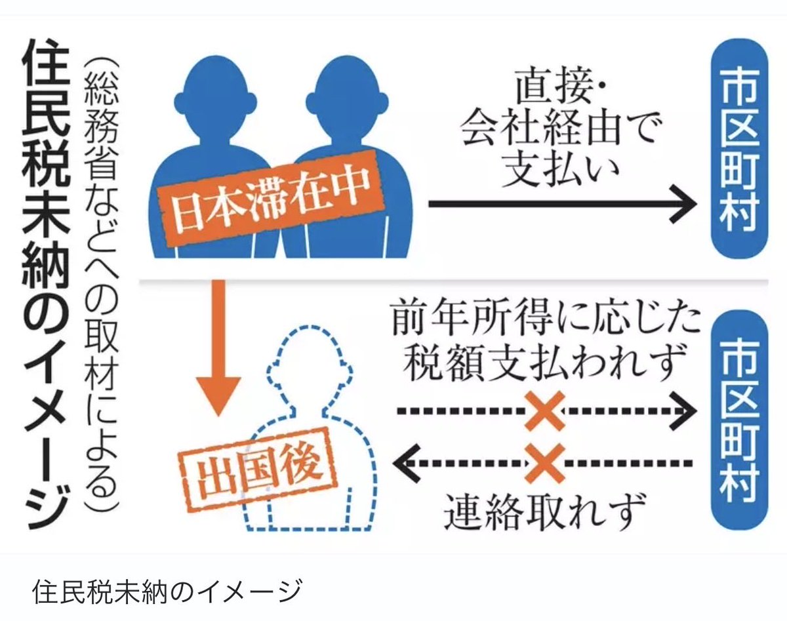

𝓶𝓸𝓻𝓽𝓲𝓼ですわ
@0Yowlry
@tokyo_feng 自己不改，活该没收上来

東京老馮
@tokyo_feng
高市内阁收紧外国人的政策，还在加码。
这两天日本各大媒体都在报一个数字：18.6%。
日本总务省调查发现：2024年度，在日本工作过后离境的外国人，应缴住民税里有18.6%没缴上。
作为对比，包括日本人在内的所有离境者，整体欠缴率只有4.6%。
四倍的差距！ https://t.co/gdexdO5fj0 https://t.co/jKoyXZ3t0S